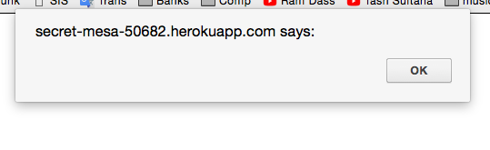
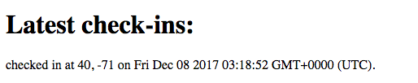
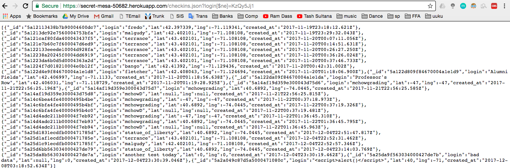
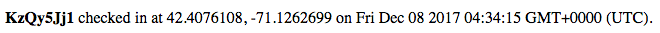
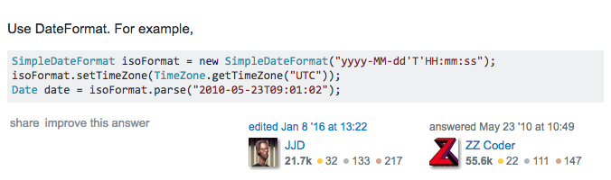
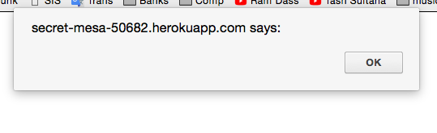
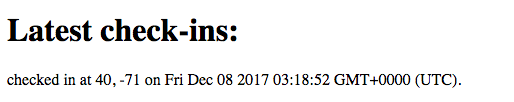
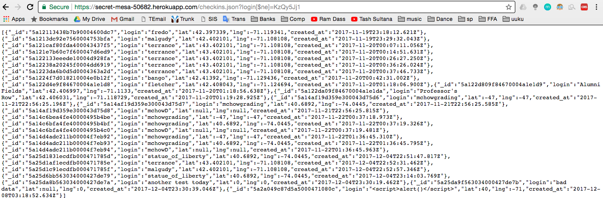
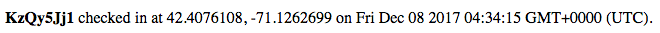
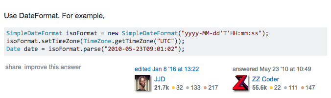

Grace Shank Assignment 4
Introduction -
The product is my partners code, which keeps logins of users and nearby landmarks and prints them onto a GoogleMaps map along with a polyline to the nearest historic landmark. I was hired specifically to seek out the potential security vulnerabilities of this program.
Methodology -
First, I went swinging into the dark to find the errors. Next, I realised that I needed to do the readings assigned for class. Upon reading these and other sources on Stack Overflow, I went through different ways to test each error in his code and discovered some of the basic problems.
Abstract of Findings -
First error-- Allows users to input into the code to write functions that can change the data, change aspects of the page, or display an entirely different web url. The change of data in this way is called a database injection and it can be fixed by validating the information before running and displaying it to a user. There are multiple instances of these errors if you include /checkins and index both.
Leak of user data-- there is a page that allows users to search for their own check-in data, returning their logins, locations and time when the entry was logged. With a simple trick, they are able to see everyone elses data instead, giving them access to the usernames, places and dates of people’s logins.
Bad coding practices-- the dates shown on this page are all wrong and use a different time-zone than the user. There are simple ways to fix this to show the time zone of the user.
Issues Found
Issue 1:
XSS error in login, lat & lng. Strings can be inserted into any of the above slots and NaN is returned for lat & lng.
Location: index.js lines 88:102
Severity:
It can be huge because it is such a stupid and simple problem; malicious users can send bad info and sites to other users, but it can be fixed in just a line or two.
Description:
I can put whatever string I want into login, including <> and / symbols which allow me to inject javascript into the function. When I put these strings into the lat and lng they are only reported back in checkins as NaN.
 Proof of vulnerability:
Author of code never validates the info, and when I set an alert as my login using curl, and then run /checkins on my web browser I get these:


Resolution:
To correct this error, the author could strip the login of characters, such as the necessary of the script tags using the replace function.
I just found out that you can use a function called Html.Encode() to change the special characters into html that is harmless and will not run the commands. I would recommend this quick fix.
Issue 2:
There is no security between user logins. Not only is there no password feature, but the users can just use check-ins to see where each login has occurred.
Location: index.js lines 168:179
Severity:
High because sensitive user data (name with location and time) are available to other users.
Description of issue:
The site is meant to work such that users can search their own logins to see previous instances of themselves. However, when the user writes “login[$ne]=[theirlogin]”, they receive a page of all other users’ login information including the time and location of their check-ins.
Proof of vulnerability:
This is an image of the command run against the user’s login including the [$ne] add-on.

Resolution: One would have to remove the [$ne] from the login name so that instead of [$ne]=thelogin it would be only thelogin. If this does not work, one can search on stack overflow for more options.
Issue 3:
Really bad programming-- the app is saving all data with the GMT time stamps, when it should show EST
Location: index.js line 95
Severity of issue:
Low severity because it does not put users at risk, it is just wrong and provides incorrect information to all users.
Description of issue:
I found this error by simply entering data into the server and watching it come back hours (and now a day) off. All dates are reported with GMT, when they should be in the time-zone of the user.
Proof of vulnerability: [image of an entry made on Thursday the 7th at 11:34 pm]

Resolution:
In order to fix this error, I have found a cited instance of code offered on Stack Overflow:

This solution involves using TimeZone.getTimeZone to decide a time-zone ahead of time.
Proof of vulnerability:
Author of code never validates the info, and when I set an alert as my login using curl, and then run /checkins on my web browser I get these:


Resolution:
To correct this error, the author could strip the login of characters, such as the necessary of the script tags using the replace function.
I just found out that you can use a function called Html.Encode() to change the special characters into html that is harmless and will not run the commands. I would recommend this quick fix.
Issue 2:
There is no security between user logins. Not only is there no password feature, but the users can just use check-ins to see where each login has occurred.
Location: index.js lines 168:179
Severity:
High because sensitive user data (name with location and time) are available to other users.
Description of issue:
The site is meant to work such that users can search their own logins to see previous instances of themselves. However, when the user writes “login[$ne]=[theirlogin]”, they receive a page of all other users’ login information including the time and location of their check-ins.
Proof of vulnerability:
This is an image of the command run against the user’s login including the [$ne] add-on.

Resolution: One would have to remove the [$ne] from the login name so that instead of [$ne]=thelogin it would be only thelogin. If this does not work, one can search on stack overflow for more options.
Issue 3:
Really bad programming-- the app is saving all data with the GMT time stamps, when it should show EST
Location: index.js line 95
Severity of issue:
Low severity because it does not put users at risk, it is just wrong and provides incorrect information to all users.
Description of issue:
I found this error by simply entering data into the server and watching it come back hours (and now a day) off. All dates are reported with GMT, when they should be in the time-zone of the user.
Proof of vulnerability: [image of an entry made on Thursday the 7th at 11:34 pm]

Resolution:
In order to fix this error, I have found a cited instance of code offered on Stack Overflow:

This solution involves using TimeZone.getTimeZone to decide a time-zone ahead of time.
Conclusion -
Future considerations should include looking into starting logins with passkeys to enter the site and see the user data to solve some of the earlier privacy problems.
The author also must look into removing special characters to keep xss and database injection hacks.
References -
A list of references and links that I used for my work:
https://stackoverflow.com/questions/35803540/how-to-remove-special-characters-from-a-string-using-javascript
https://docs.mongodb.com/manual/reference/operator/aggregation/
https://docs.microsoft.com/en-us/aspnet/mvc/overview/older-versions-1/security/preventing-javascript-injection-attacks-cs
https://stackoverflow.com/questions/2891361/how-to-set-time-zone-of-a-java-util-date